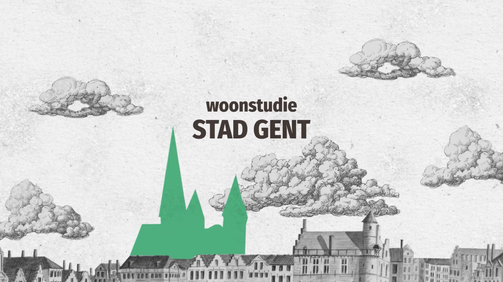
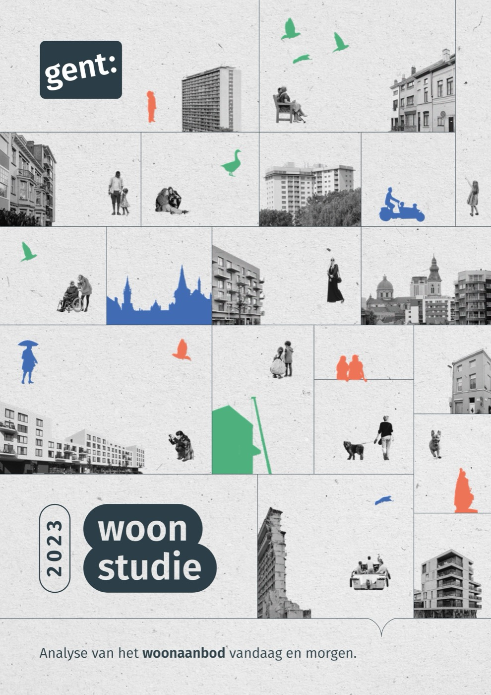

Woonstudie Gent
Hoe kan Gent blijven groeien zonder dat wonen onbetaalbaar wordt? En welk soort woningen heeft de stad de komende jaren nodig? Met de Woonstudie Gent bracht de Stad Gent de uitdagingen op de woningmarkt in kaart. Het onderzoek analyseert de evolutie van de bevolking, de betaalbaarheid en kwaliteit van woningen en de verhouding tussen de toekomstige woonvraag en het beschikbare aanbod.
De studie toont onder meer hoe stijgende woningprijzen en een tekort aan geschikte woningen jonge gezinnen uit de stad wegduwen. Ook de groeiende vraag naar studentenhuisvesting, de nood aan sociale woningen en de verduurzaming van het bestaande woningbestand komen aan bod. Op basis van uitgebreide cijferanalyses formuleert het onderzoek ambities en aanbevelingen voor het Gentse woonbeleid tot 2040.
In onderaanneming van communicatiebureau bigtrees schreef ik een samenvattende brochure die de belangrijkste inzichten uit de woonstudie toegankelijk maakt voor een breder publiek. De uitdaging bestond erin om complexe analyses, grafieken en beleidsaanbevelingen te vertalen naar heldere teksten, zonder de nuances van het onderzoek te verliezen. De brochure brengt de verschillende woonuitdagingen samen en maakt duidelijk welke keuzes nodig zijn om Gent ook in de toekomst een leefbare en betaalbare woonstad te laten zijn.
